Easy Bus Creation:
This tutorial is for those of you who are already familiar with some of the basics of connecting parts/symbols. In this tutorial I introduce a more advanced and efficient form of connection representation, buses.
Buses are not all that complicated to create. The only tricky part comes in getting used to the naming conventions and wiring syntax with which they must be created. After you have set up a bus once or twice, you should be able to make many more.
To start off you will need either your own project containing at least a couple parts, or you can use this conveniently provided project! Click here to download.
If you are going to download the project, you will need to read these directions before starting. If you are using your own project, then you will not need to read the Import tutorial.
Now to start creating buses.
The project I will be using, and some of you may be using as well, looks like the following.
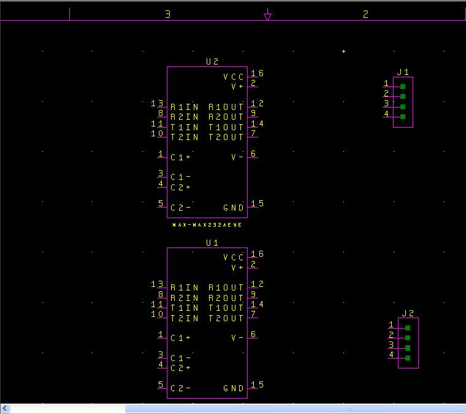
(2-bare_project.jpg)
My project (for those who are interested) consists of two RS232 level-shifter chips and two 4-pin connectors.
What I want to do is to connect the receive-input pins (pins 13 and 8) of the two RS232 chips to the 4-pin connector J1 (the top 4-pin connector) and the transmit out pins (pins 14 and 7) of both chips to the J2 (bottom) connector. To start you will need to click on the following icon to open up bus placement mode:
(3-Bus_button.jpg)
Now to create a bus you simply need to move your mouse cursor to where you want your bus to start and then left-click and drag to where you want the bus to end. When you release the left-click the first segment of the bus shall be created. All buses will need to be created in segments because you will make cleaner schematics that way. I will now display a series of images showing the process of creating a bus using the method I have described.
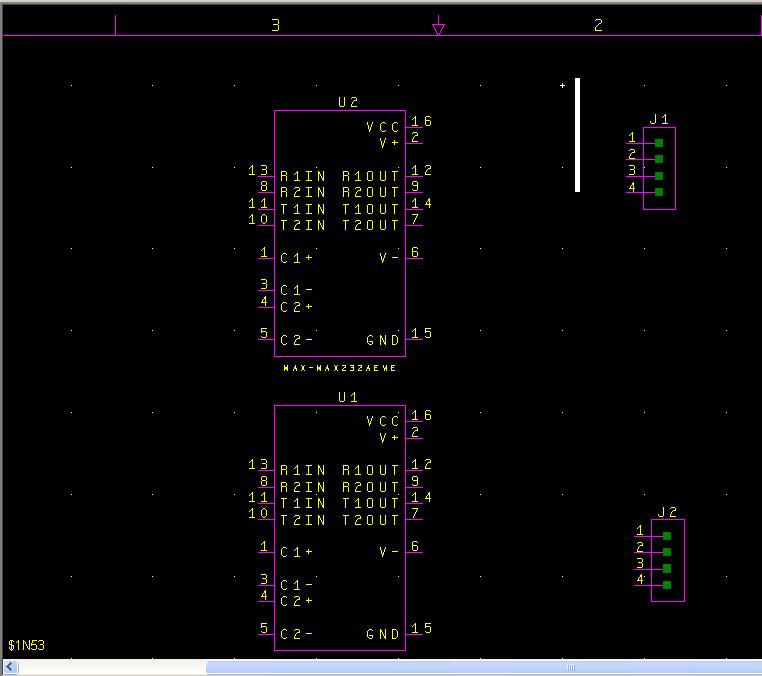
(4-bus_part_1.jpg)
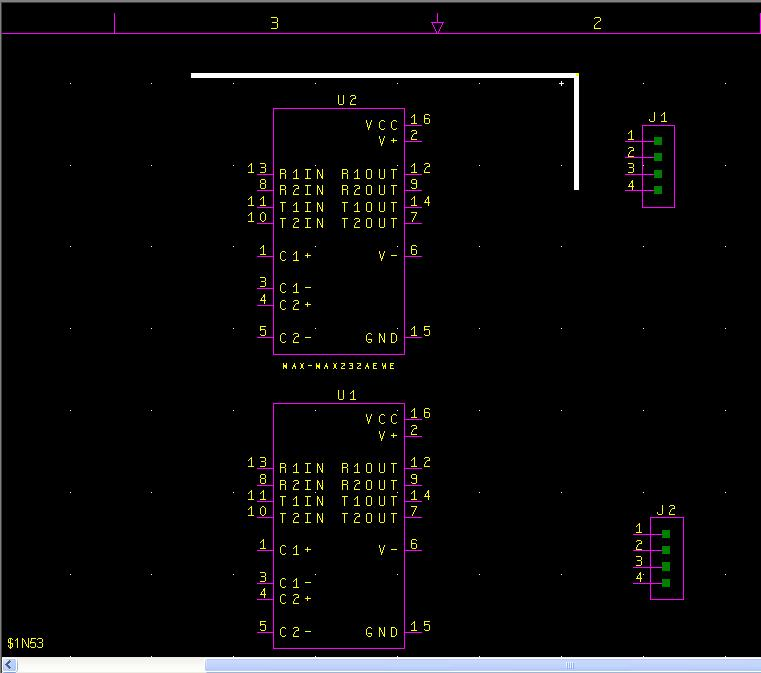
(5-bus_part_2.jpg)
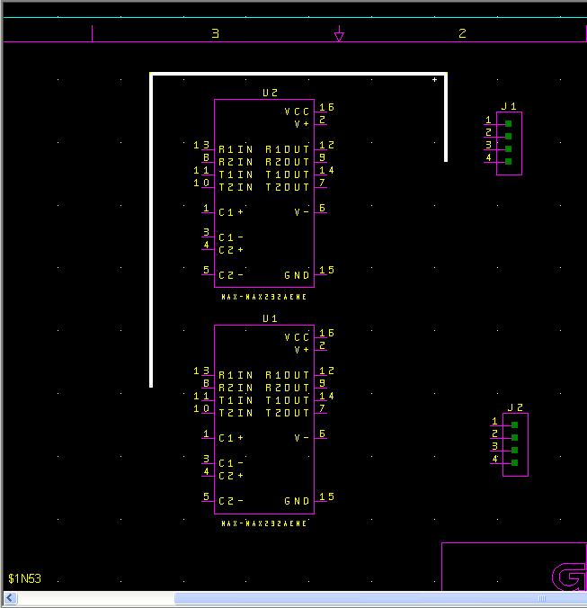
(6-bus_part_3.jpg)
That should do for that bus structure. When you create the bus structure for the other connector you will notice that you might have to overlap one bus over the other. This is allowed and DxDesigner will isolate the two buses as long as the buses are not drawn to connect. If a bus is drawn overlapping an already drawn bus, DxDesigner will create a separate bus and only connect the two buses if they are named the same.
Now we need to name the bus properly. Buses have a specific naming convention that must be followed in order for DxDesigner to know how many wires the bus will have. The naming convention is as follows
<name>[#1:#2]
The <name> part can be combination of letters and numbers. It is recommended to just use letters because when you connect wires to the bus, they will be assigned a number. It should be noted that the [#1:#2] section of the bus name does not have a space in between it and the <name> field. The [#1:#2] section determines the numbering schema for your bus. If you used [1:4] then there would be 4 wires in the bus. Those wires would be labeled <name>1, <name>2, <name>3, and <name>4. Now if you used [15:8] then those wires would be labeled <name>15, <name>14, <name>13, etc.
As wires are connected to the bus, they will automatically assigned one of the names designated for that bus. In addition, as those wires are connected, the wires connected to the bus will automatically increment (or decrement) according to how you named it. As shown earlier, the bus will automatically assign names going from #1 to #2.
Okay that was a lot of explaining, lets actually do it.
To name your bus, make sure all segments of the bus are selected by right clicking on any part of the bus and selecting the option “Select Bus” like in the following image:
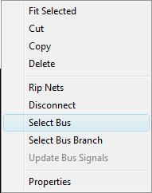
(8-right_click_menu.jpg)
Now all of the bus should be the same color (white if you have not changed your color scheme). To name the bus, open up the properties window and look for the “Name” attribute. There is a button you may press to open up the properties window and it looks like the following button:
(9-properties_button.jpg)
You may also open up the properties window by clicking on the menu View -> Properties.
If you have the bus highlighted, your properties window will look like the following in the exception that the Name field will be blank.
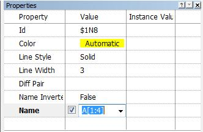
(10-properties_window.jpg)
You will need to left click just to the right of the check box in order to enable the field for editing. The checkbox enables (checked) or disables (blank box) the visibility of the name of the bus.
Due to our need for 4 wires in our bus (2 wires from each RS232 chip) I have given the bus a very simple name and labeled each wire 1 through 4. Now to connect the chips to the bus.
Once you are finished typing in the name of the bus, you will find that the name will have appeared on the right side of the bus (if you left the checkbox enabled). You may click on the name of the bus and then drag it anywhere you wish.
There are several ways to create “nets” or better known as wires: 1. right click on the edge of the pin (no right click menu will appear) and then move your mouse towards the bus and right click again to make the wire(after the first right click a green line should follow your mouse). 2. Click on the “Net” button and use the same method to draw bus lines to create Net lines. 3. Click on the menu Add -> Net and use the same method to draw bus lines to create Net lines.
When you create a Net with one end drawn to connect with the bus, DxDesigner knows that you want to connect that Net with one of the wires in the bus. DxDesigner will automatically name the Net you just created to the first name of one of the wires on that bus and add a small pink connector (once again assuming you have not changed your color scheme) called a ripper. This is what your screen will look like when you have finished creating a Net to connect with the bus.
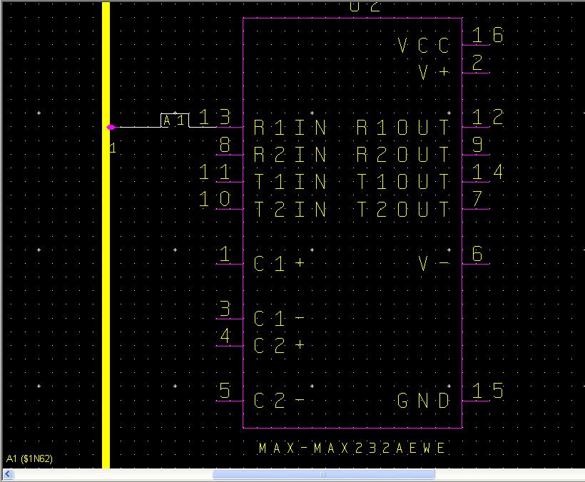
(11-rip_net.jpg)
As you can see the Net took the name A1 and in the properties window on the right side the name is highlighted for editing. If you intended that wire to connect to a different wire in the bus, just rename it. In my case I could rename that wire to A2, A3, or A4 if I desired, however I will just stick with A1. To connect another net to the bus, left click in the background to deselect the wire you just created, and then repeat the steps to create another Net. This is what my bus looks like after my second net:
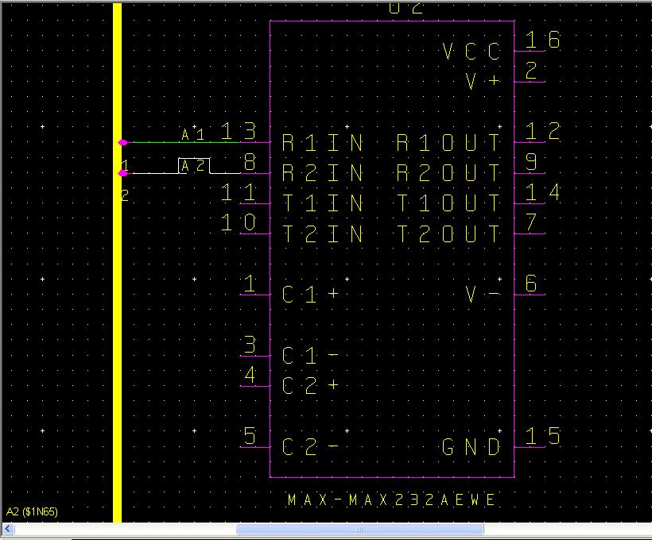
(12-rip_second.jpg)
Now I will move over to the second RS232 chip and repeat what I did for the other pin 13 and 8.
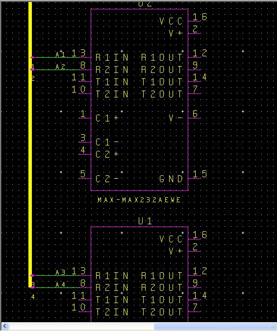
(13-rip_half.jpg)
Remember that DxDesigner will just rip in sequential order, so connect each net strategically so that it makes sense for you.
If you accidentally connect a wire to the bus, but intended to connect another, do not fret. DxDesigner will loop around once you have made connections to all of the wires of the bus so that you can connect multiple times to the same wire in the bus. If you want to know what wire number you are about to connect to on the bus, simply click the button that looks like the following:
(14-name_nets_button.jpg)
It will open up a small window that will look similar to this:
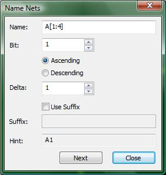
(15-name_nets_window.jpg)
This window allows you to specify the order of the naming scheme for nets that connect to your bus. The hint field shows you the name of the next net if you connect it to the bus. Since I have already connected A1, A2, A3, and A4, DxDesigner just started from the beginning again.
When you have multiple buses in your design, the Name: field will be significant because the bus that you want to work with must be in that field or else the rest of the information in that Name Nets window will not correspond to that bus.
Lastly, if you click the next button located on the bottom of the window, you may advance to the next name, thereby skipping wires in the bus you do not want to connect to at the moment.
As I stated earlier while explaining how DxDesigner will react after connecting the M+1 Net on M wire bus, you be able to make multiple Nets with the same wire name from the bus. For example, with my bus A[1:4], all nets connected to the bus with the name A1 will be connected together. Nets A1, A2, A3, and A4 will be isolated from each other though and this is why the using buses can be a powerful addition to your design. In using buses, you replace drawing multiple nets for drawing 1 bus. This will make your design cleaner and easier to read.
Lastly, with regard to buses, to double-check that your wires are connected through the bus, use the project navigator window on the left side of the screen. Left click on the name of one of the nets in the project navigator to select all instances of that net. In the following image I have clicked on the net A1 in the project navigator window and you can see that the nets labeled A1 are highlighted, indicating that they are indeed the same net connected through the bus.
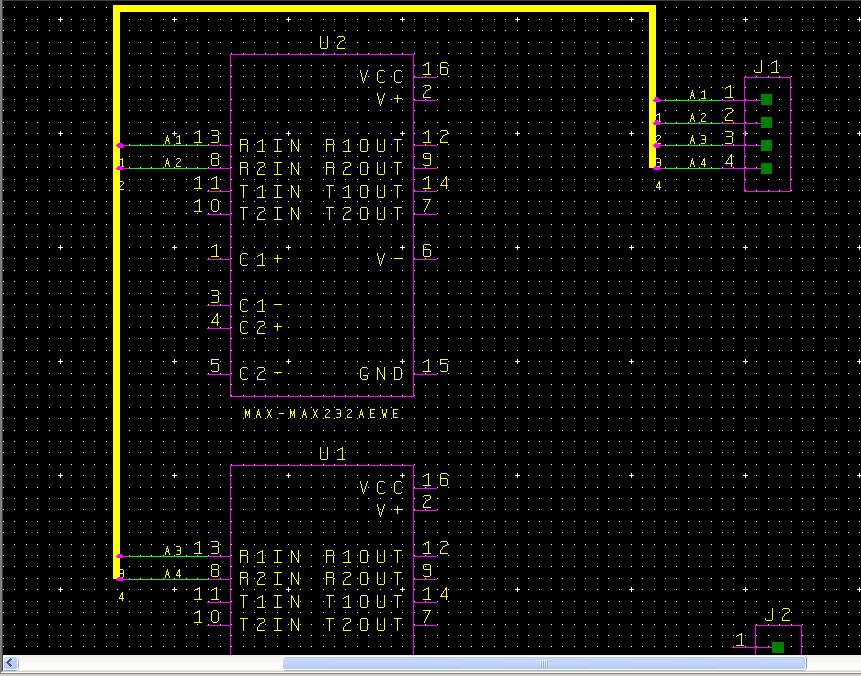
(16-doublecheck.jpg)
Why don't those of you who have been following along with the project I provided make a bus for the J2 connector? I will connect pins 14 and 7 of both RS232 chips to that connector. U2 will use wires 1 and 2, and U1 will use wires 3 and 4. This bus will be named B[1:4].
Create this bus on your own and when you think you are done click on the link below to check if you made a bus similar to the one I made. If you did not create it exactly the same as I did, that is fine as long as it has the same connectivity.
Check out how I created the other bus
(link to 17-final_schematic.jpg)
{kind=link}